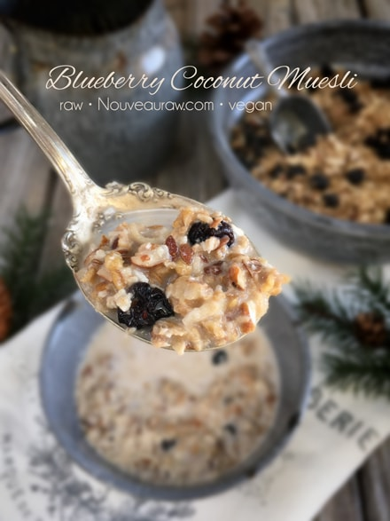
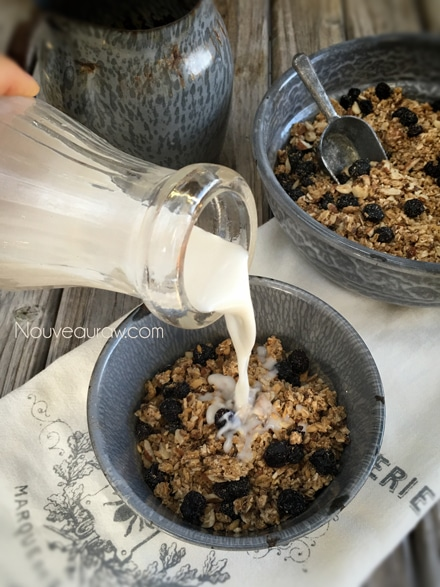
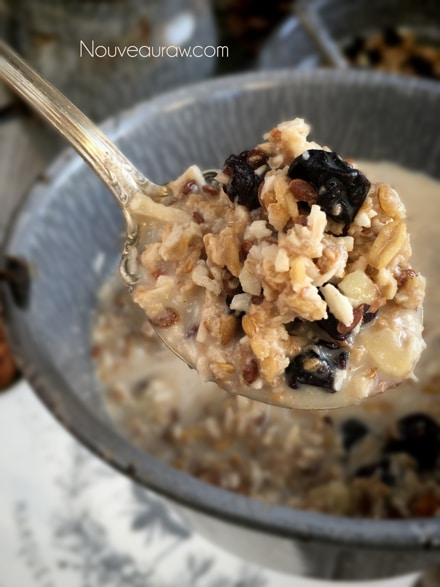

Blueberry Coconut Muesli

~ raw, vegan, gluten-free ~
I love blueberries! They are known as an antioxidant powerhouse! In today’s recipe, I used dried blueberries but feel free to use fresh ones. You will just need to add them when serving and not when storing.
Afraid that you might be losing those precious antioxidants if you used dried berries? According to a study published by The Journal of Biomedicine and Biotechnology, there wasn’t much of a difference.
They looked at the effects that freezing and drying had on antioxidants in fresh blueberries. The berries were either frozen at roughly 4 degrees (F) for up to three months, or they were dried through one of two drying processes.
When the researchers measured and compared their antioxidant activity, they found no significant differences between the fresh, dried, and frozen berries.
Dried blueberries surge with sweetness!
The real difference is in sugar content. So go light handed with them if this is a concern for you. Better yet, fresh would be a better route to go if you are trying to control your sugar intake. Dried blueberries make it nice for storing them long term or to travel with.
If using dried, you can add the blueberries to the cereal when you store it or you can add them to each serving of cereal. The amount that the recipe yields is counting the 1 cup of dried blueberries into the mix.
When selecting dried or fresh blueberries, always aim for organic since berries are on the Dirty Dozen list. Also, make sure that they are free from sulfur dioxide which is often used in the process of drying blueberries. Which can induce asthma symptoms in sulfite-sensitive or allergic people. You may want to make sure to read the package carefully if this is a concern for you. I hope that you enjoy this recipe!
Ingredients:
Yields 7 cups muesli
- 4 cups raw, gluten-free oats, soaked
- 1 cup raw chopped almonds, soaked
- 1 cup shredded dried coconut
- 1/2 cup flax seeds
- 1/2 cup water
- 1/4 cup raw coconut crystals
- 1 tsp ground Ceylon cinnamon
- 1/2 tsp Himalayan pink salt
- 2 Tbsp cold press coconut oil, melted
- 1 cup dried blueberries, add after blitzed
Preparation:
- Soak the oats and almonds as instructed in the links above.
- Once done soaking the oats, drain and rinse them for about 2 minutes under cool water. Hand squeeze the excess water from them.
- Drain, discard, and rinse the soak water from the almond.
- Place in a large mixing bowl.
- Add the coconut, flax seeds, water, coconut crystals, cinnamon, salt, and coconut oil. Stir together.
- Dehydrate at 145 degrees (F) for 1 hour, then reduce to 115 degrees (F) and continue to dry for roughly 16 hrs or until dry.
- Partway into the drying process, once it starts to dry, transfer the batter to the mesh screens and complete the drying process on these. This will speed up the dry time.
- Once cooled to room temp, place the dried batter into the dehydrator and pulse to a small crumble, porridge / muesli-like.
- Add dried blueberries.
- Store in an airtight sealed container. To extend the shelf life, you can store it in the fridge or freezer.
- When serving muesli, you can pour milk over it and enjoy it straight away or in true tradition, add milk or yogurt, stir and let it sit overnight in the fridge. This is the Scandinavian way. :) and my favorite!
- Why do I specify Ceylon cinnamon? Click (here) to learn why.
- Raw Coconut Crystals add a “brown sugar” flavor to a recipe. Read about it (here).
- What is Himalayan pink salt and does it really matter? Click (here) to read more about it.
- Are oats gluten-free? Yes, read more about that (here).
- Are oats raw? Yes, they can be found. Click (here) to learn more.
- Do I need to soak and dehydrate oats? Not required but recommended. Click (here) to see why.
Culinary Explanations:
- Why do I start the dehydrator at 145 degrees (F)? Click (here) to learn the reason behind this.
- When working with fresh ingredients, it is important to taste test as you build a recipe. Learn why (here).
- Don’t own a dehydrator? Learn how to use your oven (here). I do however truly believe that it is a worthwhile investment. Click (here) to learn what I use.


© AmieSue.com